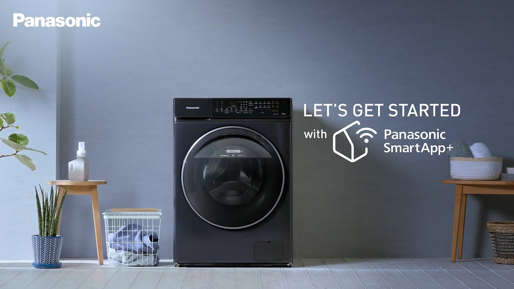
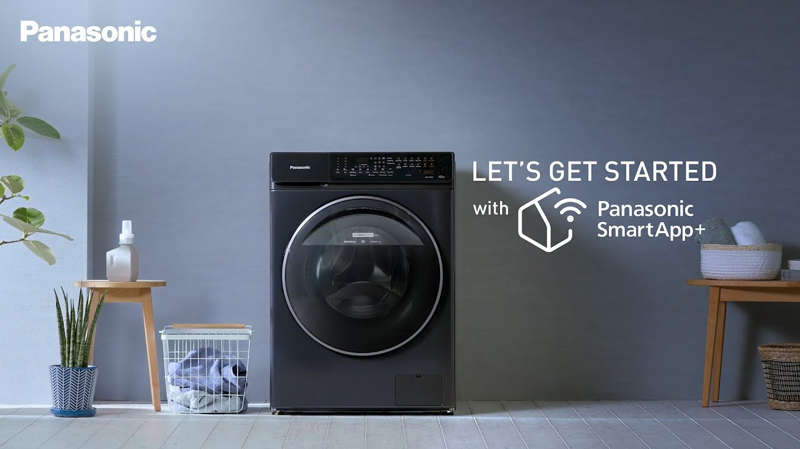

If the Smart Care app is not available, click the button below to register:
Register NowGet the Panasonic Smart Care App from Google Play or the App Store:

The Panasonic Smart Care App is a digital platform for service and warranty support. It replaces physical invoices and warranty cards, providing paperless warranty support. Available for Android and iOS devices.
Track your warranty validity once the purchased product is registered on Panasonic Smart Care App.
As the first appliances brand in the region to launch a digital warranty system, Panasonic has eliminated the need for keeping physical invoice copies and warranty cards with the SMART CARE App. The app is a one-stop window to manage your Panasonic product warranty and service request accessible at your fingertips. Customers do not need to keep any purchase invoice or warranty card. On registering a product online, they will get paperless warranty support, a first in the region.
This user-friendly app is compatible with Android and iOS devices, and can be found free to download from the app store/google play by searching “Panasonic Smart Care”.
Download Now 
